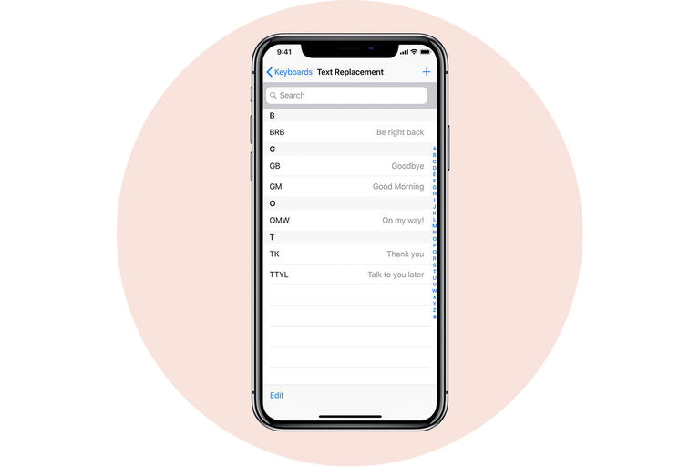

1. RECEIVE TEXTS AND CALLS ON YOUR OTHER APPLE DEVICES
One of the biggest advantages of iOS over Android is that your iPhone seamlessly pairs with other Apple devices, including the MacBook, iPad, and Apple Watch. If you want to be able to answer a call or reply to a text message from your laptop, here’s what you do:
Tap Settings
Tap Phone (or Messages)
Tap Allow calls on other devices (or Text Message Forwarding)
Toggle which devices you’d like to receive and send phone calls or messages on
2. PREVENT AUDIO MESSAGES FROM EXPIRING
For whatever reason, audio messages sent through iMessage go away after 2 minutes. Here’s how you can prevent your phone from automatically deleting them:
Tap Settings
Tap Messages
Scroll down
Under “Audio Messages” tap Expire
Tap Never
3. MAKE YOUR PHONE ‘SELF-DESTRUCT’
Hidden within your phone settings is the option to erase all data on your phone after 10 failed passcode attempts. Although this potential for data loss may sound scary, it’s highly unlikely a significant other or child would accidentally erase all your data. The reason being because after the fifth failed password attempt, iOS requires a 1-minute timeout before you can try typing a password in again. After the sixth try, you get a 5-minute timeout. After the seventh, 15 minutes, and so on and so forth.
This means it would take more than 3 hours to enter 10 incorrect passcodes. The only person spending that much time probably has bad intentions, meaning you’ll want your personal data to be erased. Here’s how to turn the setting on.ss
Tap Settings
Scroll down to Touch ID & Passcode
Enter your passcode
Toggle Erase data setting to the on position
4. TAKE A SLOFIE
Want to take your selfies to new heights? The latest iPhone’s (iPhone 11, 11 Pro, 11 Pro Max) front-facing cameras can shoot in slow motion.
Open Camera app
Tap SLO-MO
Tap the camera switching icon to use the front camera
Tap the record button
5. RECORD VIDEOS IN A PINCH
Sometimes you need to capture a moment quickly and by the time you open the camera app and switch it over to video mode, the moment has already passed. The latest iPhones have a new setting that lets you record much faster than before.
Open the Camera app
Hold down the shutter button at the bottom to begin filming
Release your thumb or finger when you want to stop recording
6. INCREASE OR DECREASE VOLUME FASTER
If you don't want to keep pushing the volume rocker on the side of your iPhone, now you can adjust the volume by using the touchscreen.
Push your volume buttons on the side of your phone like you normally would
Rather than continuing to push the physical button, just drag your finger on the volume indicator on your touchscreen, instead!
Bonus Tip: The scroll bar in iOS 13 within the Safari app now lets you scroll faster, too. This especially comes in handy when you’re sifting through a lengthy PDF document.
Scroll on a page as you normally would
Long-press on the scroll bar and drag it up or down
The faster you drag, the faster the page will scroll
7. REMOVE APP SIZE LIMITATIONS
Apple has a safeguard in place to prevent you from going over your carrier data limits when downloading an App. Previously you could only download large files over Wi-Fi. Here’s how to get rid of the download limit.
Go to Settings
Tap iTunes & App Store
Tap App Downloads
Disable the Limit
8. MUTE THOSE DREADED REPLY-ALL EMAIL THREADS
If you get trapped in an awful Reply All email thread that’s blowing up your phone, don’t fret — you can escape! Here’s what you do:
Open your Mail app on your iPhone
In your inbox, swipe right to left across the message
Tap More
Tape Mute
If you want to rejoin the conversation, repeat the first three steps, but tap Unmute
9. USE SIRI TO PLAY LIVE RADIO
In iOS 13, you can ask Siri to play your favorite radio stations. Here’s what you ask your assistant:
Activate Siri by holding the power button or with a “Hey Siri” command
Say “Siri, play radio station (name of radio station).”
Rock out!
10. TYPE FASTER BY SWIPING
Swipe-style keyboards have been popular on Android devices for a while now. It wasn’t until a few months ago that Apple allowed users to install third-party keyboards like Gboard to add the functionality. Now you don’t have to even have to go to the App Store to install one.
If you want to use Apple’s new QuickPath typing just install iOS 13, then compose a message like you normally would. To “type,” drag and hold your finger or thumb on each letter of the word you’re trying to spell. This may take some getting used to.
11. ENABLE DARK MODE
One of the most anticipated features of iOS 13 was Dark Mode. If you’re unfamiliar, the setting essentially inverts the colors on your screen, so all the white background interfaces turn black. This lets your eyes rest easier at nighttime. It also just looks really cool. Here’s how you turn it on!
Just say, "Hey, Siri, turn on Dark Mode"
If you prefer not to use Siri, you can tap the Settings icon
Tap Display & Brightness
Then choose between light and dark mode!
That's it!
12. CHANGE YOUR PROFILE PICTURE
If you want to have a profile picture for when your friends add your info to their contacts, here’s how you set a default profile picture.
Open your Messages app
Tap the ••• button on the right of your screen
Select Edit Name and Photo
Tap on the profile icon to change your image.
You can snap a photo using the Camera, upload a photo from your photo library, or you can even use an Animoji or Memoji instead.
13. TRACK YOUR MENSTRUAL CYCLE
The Health app in iOS 13 now offers a way for women to track important data about their menstrual cycle. You can log your period, flow level, and any symptoms like cramps or headaches, and whether or not you have experienced spotting. The feature also offers predictions as to when your cycle may begin and end for the next three cycles. Here’s how you can start using the tool:
Open the Health app on your iPhone
Tap the Search tab at the bottom right of your screen
Select Cycle Tracking
Tap Options to start inputting information
14. CHANGE WI-FI NETWORKS FASTER
If you’re tired of opening up the Settings app to connect to Wi-Fi hotspots, you should know there’s a faster way!
Open Control Center by swiping down diagonally on the top-right corner of your iPhone’s display
Tap and hold your finger on the middle of the Wi-Fi widget
Press and hold your finger on Wi-Fi bars icon to see a list of available networks
This trick also works for pairing Bluetooth devices!
15. SILENCE UNKNOWN CALLERS
Kiss robocalls goodbye with this must-install trick.
Open the Settings app
Tap Phone
Toggle Silence Unknown Callers
16. AUTOMATICALLY CLOSE BROWSER TABS
As scary as this tip may sound, it’s actually quite useful and helps keep your web browser running more efficiently. This trick only works for the default Safari internet browser.
Open your Settings app
Tap Safari
Tap Close Tabs
You can set it to close your tabs each day, each week, every month, or leave it on manual mode.
17. PROLONG YOUR IPHONE BATTERY
Apple has added a new option to its Battery Health feature called "Optimized Battery Charging," which is designed to extend the total battery life of a device running iOS 13. Apple says the feature slows the rate of battery aging by reducing the time your iPhone spends fully charged. The tool uses machine learning to understand your daily charging routine, so it can wait to finish charging past 80% until you need to use your phone. That way if you charge your phone at night, it won’t hold a 100% charge for several hours, which degrades your battery.
Tap Settings
Scroll down
Tap Battery
Tap Battery Health
Toggle the switch to the On position.
18. START A GROUP FACETIME CALL
You’ve probably FaceTimed a million times with your family and friends, but have you ever FaceTimed several of them simultaneously? Here’s how:
Open the FaceTime app on your iPhone
Tap the + button on the top right of your screen
Enter the name or number of the person you want to call first
Enter up to 30 additional contacts
Tap Video or Audio to place your FaceTime call
19. ACCESS THE CALCULATOR FASTER
If you need to do math on the fly but don’t want to open the calculator app, there’s a faster way you didn’t know about!
Swipe right over the home screen, lock screen, or while you're looking at your notifications
Type in the operation
Your iPhone will calculate it for you
Enter up to 30 additional contacts
This piece of advice will definitely come in handy when you need to figure out the tip at the restaurant.
20. EXTEND BATTERY LIFE EASILY
There's a setting on your iPhone called "Low Power Mode" that you may not know about. It reduces power consumption by turning off a number of battery draining features like dimming the screen faster, retrieving email less frequently, and turning off background app refresh. Here’s how you can turn it on so you can get more battery life:
Open the Settings app
Tap "Battery"
Enable Low Power Mode
21. MAKE YOUR IPHONE FLASH WHEN YOU GET A NOTIFICATION
If you'd rather have a visual cue over an auditory one, you should know that your iPhone's LED light can actually flash anytime you get pinged. Just make sure you don't have the setting on at a theater! Here’s how you can turn the setting on:
Open the Settings app
Tap "General"
Tap "Accessibility"
Scroll down a little bit
Tap "Enable LED Flash for Alerts"
22. TAKE MORE LEVEL, BETTER-FRAMED PHOTOS
There’s a hidden camera level deep in the iPhone's settings that’ll come in handy for when you’re taking overhead shots of your stuff. To turn the feature on go to:
Settings
Scroll down some
Tap "Camera"
Enable the Grid
When you hold your phone over something to take a photo, two crosshairs will appear — a white one and a yellow one. When they line up, your photo is level!
23. STOP APPS FROM ASKING FOR FEEDBACK
As much as feedback and reviews are important for App developers, it can be extremely annoying when you are interrupted by a popup asking for you to rate the app or leave feedback. Good news is that there is now a setting to put an end to the constant pestering!
Open your Settings app
Tap iTunes & App Store
Toggle In-App Ratings & Reviews to "Off"
24. CUSTOMIZE TEXT MESSAGES WHEN YOU IGNORE A CALL
We get it — you're busy and sometimes you have to ignore a call. But rather than leaving your friends and loved ones hanging, the least you can do is send a text. Sometimes you don't have time for that. To help, your iPhone has three pre-written options ("Sorry, I can't talk right now," "I'm on my way," and "Can I call you later?"), and of course the button that lets you type your own text. You may not have known you can customize and overwrite the other three options. Here's how:
Open your Settings app
Tap "Phone"
Tap "Respond with Text"
Tap which field you want to edit
Enter new text
25. SET A TIMER FASTER
If you rely heavily on your iPhone timer like we do, you should know that there's a faster way to access it!
Swipe down on your screen to access the Control Center
Instead of tapping the timer, press and hold it
Swipe your finger up to increase the time
Tap "Start"
26. CREATE A CUSTOM MEMOJI
You’re probably already familiar with Animoji, but now you can create your own custom animated avatars called Memoji — that looks just like you. Memoji are a silly but personable and fun new way to communicate with your friends and family. Here’s how you can create and customize one of your own:
Open your messages app
Tap the animoji icon with the monkey on it
Swipe right to the plus sign and tap New Memoji
Choose your skin color
Choose your freckle level
Choose your hairstyle
Choose your head shape, age, and chin
Choose your eye shape, eye color, and eyelashes
Choose your eyebrows, eyebrow color, and eyebrow shape
Choose your nose, lip color, and lip shape
Choose your ears, earrings
Choose your facial hair and its color
Choose your eyewear and its color
Choose your hat and its color
27. ADD MULTIPLE FACES TO FACE ID
The latest iPhones (except for iPhone SE) use Face ID to unlock your device. Previously on iOS 11, the tech could only recognize a single face, so anyone else who uses your phone would have to input a passcode to unlock your iPhone. Just as you could register multiple fingerprints with Touch ID for past iPhones, Apple now lets you register multiple faces to unlock a single device. Here’s how to do it!
Tap Settings
Tap Face ID & Passcode
Type in your passcode
Tap Set Up an Alternate Appearance
Scan your face and follow the prompts
28. MEASURE OBJECTS WITH YOUR IPHONE
It seems like any time you need to measure something, you can never find the tape measure to do it. Now iOS 12 has a built-in measuring tool that you can use to measure rooms and objects. It’s not 100% accurate, but it’s a useful tool to use when you need to measure an object or the distance between two things in a pinch. See how the app measures up by following these steps:
Open the Measure App
Move your iPhone around so the device can analyze the area
Hold your iPhone so the camera is pointing at the object you want to measure
Move your iPhone around until you see a white circle with a dot in the middle
Line the white dot up with the edge of the item you want to measure
Press the white button with the + sign
Drag to opposite edge of item
Press the white button with the + sign
The app will display the estimated measurement
29. LIMIT IPHONE USAGE WITH SCREEN TIME
We're absolutely guilty of using our phones too much. If you want to cut back on time spent on social media, online shopping, or scanning headlines, iOS 12 has a new setting called Screen Time that can help. The feature definitely will come in handy for smartphone-addicted kids, too. Here’s how to enable Screen Time:
Tap the Settings App
Tap Screen Time
Tap App Limits
Tap Add Limit
Tap a Category
Tap Add
Select the Time
Tap the Top Left Arrow to Save
30. ADD EFFECTS TO YOUR PHOTOS
iOS 12 adds some Snapchat-esque photo editing features you can use right within the messaging app. You can add shapes, stickers, some text, or a filter to your selfies or photos immediately after taking them so you can quickly send them to your friends and get back on with your day.
Open the Messages App
Tap the Camera icon on the bottom left
Take a photo or a selfie
Tap Effects
Tap Shapes, Text, or Filters
Drag the objects on your photo
Press the send button to send the edited image
31. MAKE THE MOST OF 3D TOUCH
To shave off a couple of seconds throughout your day, remember that most iPhones have a setting called 3D Touch. By applying more pressure to the touchscreen, apps can respond by displaying a menu, showing additional content, or playing an animation.
The Camera app, for example, provides a shortcut for taking a selfie, recording video, scanning a QR Code, or taking a portrait photo.
32. CREATE SHORTCUTS
Besides performance and battery improvements, Shortcuts are probably the most exciting new feature to come from iOS 12. They help simplify everyday tasks and let you get things done with your apps or through Siri. For example, you could create a shortcut called “omw” (on my way) which would open your favorite navigation app, pull up directions to your house, and automatically text your significant other with your estimated travel time. Sounds cool, right? Here’s how to create or download shortcuts of your own:
Open the App Store
Search Shortcuts
Download the App
Open the App
Tap Get Started
Tap Gallery at the bottom right
Tap what shortcut you want to use
Tap Get Shortcut
Follow the steps to configure your new shortcut
33. ONE-HANDED KEYBOARD
Smartphone displays keep getting bigger, which makes typing difficult, especially with one hand. Your iPhone actually has a feature that shifts the keyboard over a smidgen so you can use one hand to type and the other to do whatever else it is that you need to do. Here's how to enable the feature:
Hold down the emoji or globe icon on the bottom left of the keyboard
Select the left- or right-handed keyboard icon
Tap the arrow in the blank space that's created by the keyboard shift to go back to normal
34. MUTE TEXT-MESSAGE THREADS
Smartphone displays keep getting bigger, which makes typing difficult, especially with one hand. Your iPhone actually has a feature that shifts the keyboard over a smidgen so you can use one hand to type and the other to do whatever else it is that you need to do. Here's how to enable the feature:
Hold down the emoji or globe icon on the bottom left of the keyboard
Select the left- or right-handed keyboard icon
Tap the arrow in the blank space that's created by the keyboard shift to go back to normal
35. TYPE TO SIRI
Talking to Siri in public just seems weird. Luckily, you can ask Siri questions with your thumbs instead of your voice. Here's how:
Tap Settings
Tap General
Tap Accessibility
Tap Siri
Toggle Type to Siri
Also make sure your phone is on silent, or Siri will blurt out your answer out loud.
36. USE THE DOCUMENT SCANNER IN THE NOTES APP
Apple has implemented a convenient document scanner right in the Notes app. Here's how you access it:
Open the Notes app
Create a new note or open an existing one
Tap the + icon that's located above your iPhone's keyboard in the center
Tap Scan Documents
Use the shutter button or one of your iPhone's volume buttons to capture a photo of your document
Adjust the corners of the document by tapping and dragging them, if necessary
Tap Save
You can also scan documents in the File app
Select the Browse tab
Tap on the three-dot icon in the top-right corner
Tap Scan Documents
Take a photo
Save
37. EDIT SCREENSHOTS
Did you know your iPhone lets you edit your screenshots before saving or sharing them? Here's how to get it:
Take a screenshot by pressing the power button and the home button at the same time
Quickly tap the thumbnail of the screenshot that appears at the bottom left of your screen
From there you can crop the screenshot, doodle on it, highlight parts, etc.
When you're finished editing, tap Done in the top left, or tap the share icon in the top right to send it to someone
38. CHECK FLIGHT STATUS
If you have to pick someone up from the airport, you'll dig this. Safari makes it much easier to track flights, so you know what time your friend will land and if their flight experiences any delays. If you're the one flying, it comes in handy for figuring out what gate you need to go to and informing you of the total duration of your flight (that way you know how many episodes of Twin Peaks you need to download, of course). Here's how to do it:
Open Safari
In the address bar, type the airline's name and the flight number
Under the Flight tab, select the flight by tapping it
From there you can see a map of where the flight is and check out the latest information on the flight
39. OFFLOAD UNUSED APPS
You've probably gotten a "Storage Almost Full" message a handful of times, and you may have even deleted some apps and photos to make room to install iOS 12, especially if you have a 16 GB iPhone. This new feature will save you a ton of stress and space over time. It automatically deletes apps that you don't use without deleting their documents and data. Here's how to offload apps and save precious storage space:
Tap Settings
Tap iTunes & App Store
Toggle Offload Unused Apps at the bottom
The deleted apps will be grayed-out on your home screen, and they can be reinstalled with a simple tap
40. CUSTOMIZE CONTROL CENTER
You may not have known that your Control Center settings are completely customizable. If you want, you can place the settings and features you use most right where you want them. Here's how:
Tap Settings
Tap Control Center
Tap Customize Controls
Tap the green "+" icon next to any item you want to add and the red "-" icon to delete items
Tap, hold, and slide the icon with three bars to reorganize the controls
Once you're done, tap Back at the top left of your screen
Swipe up from the bottom of your screen to access Control Center and get a feel for its new, customized layout
41. DO NOT DISTURB WHILE DRIVING
Apple hopes to prevent accidents and cut down on distractions while driving with this new feature. It blocks incoming calls, texts, and notifications when your iPhone detects acceleration or connects to your vehicle's Bluetooth. When someone tries to get a hold of you, your iPhone will send an auto-reply message to let the person know you're driving. The feature can be disabled for passengers, and if there's an emergency and someone needs to reach you, they can still contact you if they respond to the text message with the word "urgent." To turn on the settings, just do the following:
Tap Settings
Tap Do Not Disturb
Tap Automatically if you want the setting to be enabled when detecting movement
Tap While Connected to Car Bluetooth if your car has Bluetooth
Tap Manually if you don't want the setting to enable automatically, and then add Do Not Disturb While Driving to Control Center (see previous tip above)
Tap Auto-Reply to customize and change the message, if you wish
Tap Auto-Reply To if you want to change who gets sent the auto-reply message. You can pick All Contacts, Favorites, Recent Contacts, or No-One
42. TEXT REPLACEMENT

Sometimes typing things like email addresses, URLs, and, of course, shruggy ¯\_(ツ)_/¯ is a pain. Your iPhone has a text-replacement feature that lets you type just a few characters rather than spending forever typing the actual thing. Here's how you do it:
Open the Settings app
Tap General
Tap on Keyboard
Tap on Text Replacement
Tap the + on the top right corner
In the Phrase field, type the word or phrase you want to create a shortcut for
In the Shortcut field, type the text you want to be replaced by the phrase
Tap Save at the top right corner
Now, any time you type the shortcut on your keyboard, your iPhone will replace it with the phrase after you press the space bar.
Bonus tip: If you have a colorful vocabulary and are ducking sick of seeing the words "duck" "ducked" and "ducking," when typing a message, just create a new contact and input the swear word in the first name field.
43. HEY SIRI
We have a love-hate relationship with Siri. Siri may not be as smart as Alexa on our Amazon Echo, but Siri is much more portable. To make Siri even more accessible, you should enable Hey Siri, which lets you use Siri without pressing the home button on your iPhone. Here's how you turn it on:
Open the Settings app
Scroll down and select Siri
Toggle to Allow "Hey Siri!"
Bonus tip: If you ever lose your iPhone at home, just shout "Hey Siri" and you should hear a tone. Keep doing it until you find your phone. Sure, you can always log into iCloud and use Find My iPhone, but this method is just as effective, and it takes less time.
44. TEACH SIRI HOW TO CORRECTLY PRONOUNCE NAMES
Siri may not be saying your friend's name correctly, but you can fix that!
Hold the home button or say, "Hey, Siri" to trigger Siri
Say, "That's not how you pronounce [name.]"
Say your friend's name
Siri will offer four pronunciation options
Select the correct pronunciation
45. CUSTOM VIBRATIONS
You may already have custom ringtones for when certain friends and loved ones call, but that doesn't come in handy when you have your phone on silent though. Your iPhone lets you create and assign custom vibrations to specific contacts. Here's what you have to do:
Open the Settings app
Select Sounds & Haptics
Select Ringtone
Select Vibration
Tap Create New Vibration
Create a new vibration by tapping and holding however you want
Tap Stop in the bottom right
Tap Save in the top right
Name the vibration
After you create the custom vibration, here's what you need to do to assign it to a contact:
Open the Contacts app
Choose the contact you want to assign the custom vibration to do.
Tap Edit on the top right corner
Select Vibration
Choose the new vibration that you created earlier
46. USE YOUR KEYBOARD AS A TRACKPAD
You may not have known that your iPhone's keyboard can double as a trackpad. This way you can move your cursor much more accurately instead of tapping and holding on the screen to bring up the magnifying glass. To use this feature, you need an iPhone 6S or later.
While you are typing a message, firmly press and hold on the keyboard's spacebar to activate the trackpad
Drag your finger around to move your cursor through the text
When the cursor is where you want it to be, just let go
You can also tap and hold on the cursor itself and drag it to the desired position.
If you have an older iPhone that doesn't have 3D touch, we recommend you install the third-party keyboard, Gboard, which lets you use the spacebar as a mini trackpad to swipe through text.
Bonus tip:BRather than tapping the 123 button at the bottom left of the keyboard, tapping the character you want, and then tapping the 123 button again, just hold the 123 button, slide your thumb to the character you want to use, then lift your thumb up off your screen. The character will be input, and your keyboard will return to normal without taking the extra step of tapping the 123 button again.
47. USE YOUR IPHONE AS A LEVEL
Most people rarely use the Compass app that's preinstalled on their iPhone. Within the app is another tool you may not have known about: a spirit level. Here's how you easily access it:
Open up the Measure app
Tap Level at the bottom right
Lay your phone flat against the surface you need to check levelness for
If you tap the screen, you can measure the difference between the two surfaces. The red margin shows how much the two angles vary.
48. BACKSPACE ON THE CALCULATOR
The Calculator app on the iPhone just doesn't work as well as the original thing. Because there's no tactile feel to it, you may accidentally press a key you didn't mean to. So, you click the C or AC button to start over, right? WRONG. The iPhone calculator app has had a backspace button all along! It's as easy as a single step:
Just swipe to the left or the right at the top of the screen where the numbers are displayed. Your swipe will delete the number you tapped last.
49. TURN ON MEDICAL ID SECTION
Within Apple's Health app, you should fill out the Medical ID section. This will not only come in handy in the event of an actual emergency, but it can also help a good Samaritan return your iPhone if you lose it.
Open the Health app
Tap Medical ID at the bottom right
Tap Edit at the top right
Make sure Show When Locked is toggled
Fill out the corresponding text boxes, and put your email or social media handles in the medical notes section so someone can return your lost phone
50. HIDE PHOTOS
Sometimes you have photos in your camera roll that your mom wouldn't be proud of. 🙊 When you hand your iPhone over to someone else, they may swipe and see something you wouldn't want them to. Fortunately, you can prevent that from happening by hiding certain photos.
Open the photos app
Open the album where the photo(s) you want to hide reside
Tap Select at the top right
Select the photo(s) you want to hide
Tap the share icon at the bottom left
Tap the hide icon at the bottom right
Tap Hide Photo
BONUS
51. SET A SLEEP TIMER
If you like to listen to music or podcasts before you fall asleep, you're going to love this trick. The iPhone includes a timer in the clock app that can stop audio playback from any app.
Open the Clock app
Select Timer at the bottom right
Set how long you want the timer to be
Tap When Timer Ends
Scroll to the bottom of the list and tap Stop Playing
Tap Set at the top right of your screen
Press the Start button
Drift off to sleep without worrying about your iPhone battery being dead in the morning from leaving your music on